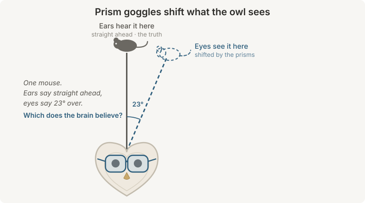
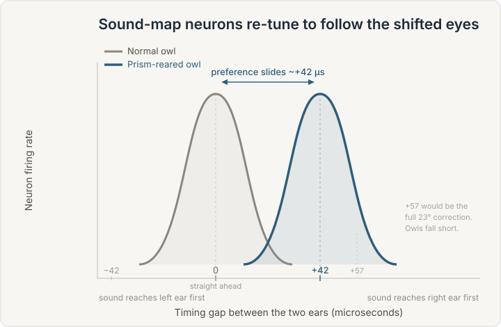

What happens when you put prism glasses on a barn owl?
A young owl in goggles that shift its whole world sideways, and the map of sound in its brain quietly sliding over to match. It's one of the clearest demonstrations we have that experience wires the brain.

Here's an experiment that sounds like a prank and turned into one of the most important findings in how brains learn. You take a young barn owl, and you fit it with a tiny pair of prism glasses that shift everything it sees about 23 degrees to one side. A mouse straight ahead now looks like it's off to the right. Then you wait, and you watch what its brain does about the fact that its eyes and its ears no longer agree.
What the brain does is quietly move its hearing to match its eyes. That single result, worked out over nearly three decades in Eric Knudsen's lab at Stanford, is one of the clearest windows we have into how experience physically shapes a brain, and into what a critical period really is.
Why a barn owl
Barn owls hunt in near total darkness, and they catch mice mostly by ear. To do that they need to know, with real precision, exactly where a sound is coming from. So evolution gave them a beautiful solution, and it turns out to be a solution that lets scientists take the brain's inner map and hold it up to the light.
An owl works out where a sound is using two clues. For the left and right of it, the horizontal, it uses timing. A sound off to the right hits the right ear a hair sooner than the left, and the owl's brainstem measures that gap, which is a matter of millionths of a second, called the interaural time difference. For up and down, the vertical, the owl uses loudness. This is the clever part. A barn owl's two ears sit at slightly different heights and point in slightly different directions, so the balance of loudness between them changes as a sound moves up or down. That's the interaural level difference. (Worth flagging, since it's easy to overgeneralize. We locate up and down a different way, using how the folds of our outer ears color a sound, so the owl's exact trick is an owl trick, not a human one.)
Now the key part. The owl lays these sound directions out as an actual map. In a midbrain structure called the inferior colliculus, neurons are arranged in order, so that one cell fires for sounds from straight ahead, its neighbor for sounds a little to the right, the next for a little further right, and so on. That map is then handed to a neighboring structure, the optic tectum, where it comes into exact register with a map of vision. A neuron that looks at a spot off to your right also listens to that same spot. Sight and sound, stitched together into one shared sense of where.
The experiment
That alignment between the eye map and the ear map is not something the owl is simply born with, fixed and finished. It has to be learned and kept in tune, because a growing animal's head and ears keep changing size, which changes the timing and loudness cues. Something has to constantly recalibrate hearing so it keeps pointing at the truth. Knudsen's group guessed that the calibrating signal was vision, and the prisms were how they tested it.
Fit a juvenile owl with prisms that displace its visual world by 23 degrees, and you've told a very specific lie. A sound and the object making it now arrive at the ears with their normal timing, but they look like they're 23 degrees off. The eyes and ears disagree, and the disagreement is precise and constant.

Over the following weeks, the owl's brain takes a side, and it takes the side of vision. The neurons in the sound map re-tune themselves. A cell that used to fire for a sound from straight ahead starts firing for a sound whose timing puts it well over toward the side, because that's the direction the shifted eyes now call straight ahead. The whole auditory map slides over until it lines back up with the displaced visual one. The owl relearns where sounds are so that hearing agrees with sight again, even though it's sight that's been fooled.
Let's read the key result
The finding is easiest to see in a single neuron, so let's walk through what the recording actually looks like. Here I've redrawn the shape of the classic result in our own figure, so we can read it together.

Start with the axes, because once you can read them the result is obvious. The horizontal axis is that timing gap between the ears, the interaural time difference, measured in microseconds. Zero in the middle means a sound reached both ears at once, straight ahead. To the right, the sound led at one ear, meaning it came from that side. The vertical axis is simply how strongly the neuron fires. So each curve is a portrait of one cell's taste. It says, this is the direction I care about, and I fire hardest when a sound comes from there.
The grey curve is a normal owl. It peaks right around zero, so this cell is tuned to sounds from straight ahead. Now look at the blue curve, the same neuron's cousin in a prism-reared owl. It's the same shape, an equally sharp preference, but the whole thing has slid to the right, peaking near 42 microseconds instead of zero. The cell has kept its sharpness and simply changed its mind about which direction counts as ahead. Multiply that one shifted cell across the entire map, and you have a hearing system that has bodily rotated to chase the eyes. The move is large, though usually not the full 23 degrees the prisms ask for. The map travels most of the way to the new alignment, not quite all of it, which is a quiet hint that even this learning has limits.
That's the whole experiment in one picture. Nothing about the sound changed. What changed is the brain's idea of what a given sound means, rewritten by weeks of looking at a world that didn't match.
The catch, and what it taught us about critical periods
Here's where the story earns its place in every neuroscience course. The owl's brain is not equally willing to do this at every age.
A young owl adapts almost completely. Its map glides over to the new alignment within a few weeks. But the ability fades with age. In careful work tracking owls of different ages, the big visually guided shifts were limited to a sensitive period that closed at roughly 200 days, about when the owl reaches adulthood. Put the same prisms on a fully grown owl and, at first, the answer looked like a flat no. The map barely budged. This is the textbook critical period, a window early in life when the brain is soft and teachable, which then seems to close.
Except the closing turned out to be less like a door slamming and more like a lock that a few different keys can still open. Later experiments from the same lab chipped away at the wall in three ways, and each one is worth knowing.
First, small steps. An adult owl that flatly refuses to adapt to a 23 degree jump will adapt if you sneak up on it, shifting its vision a few degrees at a time and letting it adjust to each small step before the next. Broken into pieces, the same big change becomes learnable in a brain that couldn't take it all at once.
Second, effort. Adult owls that had to actively hunt live prey shifted their maps far more than adults that were simply handed dead mice, roughly five times as far over the same stretch. Doing the thing, with attention and stakes, opened a door that passive exposure left shut.
Third, and strangest, a head start lasts. An owl that learned the shifted map as a youngster, then had its prisms removed and lived normally for a long time, could relearn that same shift far faster as an adult than an owl seeing it for the first time. The early lesson left a trace that stayed usable for life.
The critical period isn't the brain turning to stone. It's the brain getting choosier about what it takes on faith.
What's actually happening in the wiring
The most satisfying part is that we know, in real physical terms, what the learned map is made of, and it isn't what you might guess. The brain doesn't tear out the old wiring and lay down new. It builds the new alongside the old and then hushes the old one.
On the building side, when a map shifts, axons carrying sound information sprout brand new branches into the part of the map that stands for the learned direction, growing fresh connections where the shifted tuning needs them. On the hushing side, the original, correct-for-normal wiring is still physically there. It has simply been switched off, held quiet by inhibition using the neurotransmitter GABA. You can show the old map is still present by blocking that inhibition with a drug, at which point the normal responses reappear from under the learned ones.
That detail is the secret behind the whole age story. If learning silences rather than deletes, then the innate map is always waiting under the surface, which is why owls snap back to normal so readily once the prisms come off. And it's why a lesson learned young can be reawakened much later in life. The trace was never gone, only muted.
Why it matters, and where to stop
Strip away the goggles and the owl, and this is a clean demonstration of a deep idea. Your brain's senses are not calibrated at the factory and shipped. They're tuned against each other, constantly, by experience, with one sense often teaching another what the world is really like. Vision hands hearing an answer key, and hearing checks its work against it.
It also gives the phrase critical period a fair and useful meaning. There really is a window when this kind of large recalibration is easy, and it really does narrow with age. But narrow is not the same as shut. The adult brain in these owls was never frozen. It was cautious, and it could still be coaxed, by smaller steps, by real engagement, and by what it had practiced before. That's a more hopeful and more accurate picture than the tired line that the adult brain can't change.
A fair place to stop is to say what this is and isn't. It's a midbrain map for pointing at sounds, in a bird, studied in the lab. It's a gorgeous model of how the brain keeps its spatial senses honest, and it's not a stand-in for how humans learn language or read or recover from injury, and the exact 200 day window belongs to owls, not to us. What travels across species is the shape of the lesson, not the numbers. Experience writes real, physical changes into a brain, most freely when young, and never quite as finally as we used to think.
For another look at how much of your inner life runs on machinery you never notice, see what a neuron actually is.